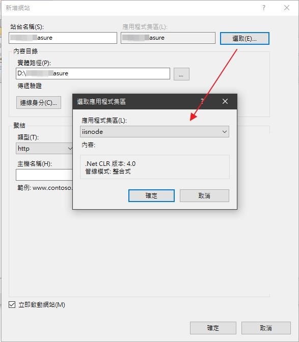

一、安裝 URL Rewrite
請至下列網站安裝 URL Rewrite 2.1
https://www.iis.net/downloads/microsoft/url-rewrite
你要安裝 URL Rewrite 2.0 或是 URL Rewrite 2.1 版本皆可，
此範例是安裝 URL Rewrite 2.1 - x64 installer
註：不要利用 Web Platform Installer 去安裝 URL Rewrite 2.0，很容易安裝失敗。
二、安裝 NodeJS
此範例為安裝 node-v10.16.3-x64.msi
注意：NodeJS 要比 iisnode 還要先安裝，否則 iisnode 模組將無法自動找到 node.exe，
而出現下列問題。
「The iisnode module is unable to start the node.exe process.
Make sure the node.exe executable is available at the location specified in the system.」
三、安裝 iisnode
請至下列網站安裝 iisnode
https://github.com/azure/iisnode/wiki/iisnode-releases
於此範例，個人選擇安裝 iisnode for iis 7/8 (x64) - iisnode-full-v0.2.21-x64.msi

確認是否已安裝 iisnode 模組，有看到 iisnode 代表成功。

此為原始網站，但已不再維護，僅供參考。
https://github.com/tjanczuk/iisnode
四、建立 Node for IIS 應用程式集區
填入如下選項

於剛新增的應用程式集區之進階設定，將識別屬性值選為 NetworkService
五、建立站台
應用程式集區要選 iisnode

六、網站設定
當站台建立好之後，還需設定 URL Rewrite 與「處理常式對應」

設定值可參考如下 Web.config 檔
<?xml version="1.0" encoding="UTF-8"?> <configuration> <system.webServer> <!--處理常式對應--> <handlers> <add name="ModuleCorrespond" path="launch.js" verb="*" modules="iisnode" resourceType="Unspecified" /> </handlers> <!--URL Rewrite rule--> <rewrite> <rules> <rule name="TheRule"> <match url="/*" /> <action type="Rewrite" url="launch.js" /> </rule> </rules> </rewrite> </system.webServer> </configuration>
設定完這樣就算完成了。
參考資料：